体验测试 · 执行版报告
ai-doc-lint 新用户视角全功能体验测试报告
以「带着合同来用、对功能完全不熟悉」的新注册普通用户身份，对独立文档校验工具的每个前端页面、界面与输出进行全流程体验，排查"用户上传出错却不知道错在哪、下一步怎么办"等用户层面问题。
测试对象：ai-doc-lint 自托管AI文档校验工具（独立工具定位）
测试身份：新注册普通用户 uxuser_20261012
测试时间：2026-10-12 ~ 2026-10-13
环境：Windows + Edge 桌面浏览器 · localhost:8080 · 7 容器全健康
覆盖：9 页面 + 6 专项模块 + 10 预置检查点 + 异常注入
1执行摘要
一句话结论 + 严重度统计 + 该肯定的亮点
总体结论：当前界面整体仍是"给开发者和法务专家看的后台系统"，尚未达到"给业务人员和新用户用的独立工具"标准——核心痛点集中为：技术黑话刷屏（认知负荷）、报错有入口但无"后果与下一步"解释、跨文档比对存在 P1 级功能断裂、报告导出物不可直接改。但解析失败人工闸门、报告页 AI 助手价值、修复闭环等基础能力已具备，具备从"能用"走向"好用"的调优基础。补测（M2/M3）结论：批注版 Word 无原合同全文（WPS 真实打开坐实 P1-3）；多角色（法务/业务/管理员）界面无角色定制（仅"系统管理"为管理员专属）；规则引擎漏检金额大小写矛盾（仅 AI 助手可答）；注册表单被浏览器自动填充污染（三次复证）；多账号数据隔离成立。
该肯定的能力亮点（体验中实测通过）
- 解析失败人工闸门：损坏文件进入"待决策"明确状态，不是黑盒报错；弹窗提供三条解决路径（OCR重新识别 / 带警告继续 / 取消重新上传）。
- 报告页 AI 助手有真实价值：用户问"付款条件"，AI 深度答出"金额大写壹佰万元 vs 小写 10000.00 元严重不符"——这是规则引擎漏检、AI 补位的高价值发现。
- 修复闭环完整：报告项"标已修复"→ toast 反馈 → 状态更新 → 可"重开"回滚。
- 语义检索结果可用：命中段落高亮 + "查看报告"跳转按钮。
- 格式前置拦截：.zip 等不支持格式在文件选择阶段即被系统对话框过滤，不等到上传后才报错。
- 侧栏文档名已非 UUID：文档列表显示文件名 + "已解析"状态标签。
- 批注生成有即时反馈：点击后 toast"批注版已生成并开始下载"。
2九页面逐页体验记录
以新用户视角逐页走通，每页含体验记录、证据截图与发现
2.1 注册 / 登录页
- 登录页无「忘记密码」入口；密码输入框无"显示/隐藏"切换。
- 注册页用户名框预填了上次账号 boss_admin 的残留（浏览器自动填充），新用户易直接提交错账号。
- 注册时两次密码不一致，仅提示"两次输入的密码不一致"红色文字，未指明是哪一次填错、是否需要清空重填；清空两框重填后错误消失（首次清空一框无效）。
- 注册成功即自动登录（无审核/欢迎引导），进入工作台。
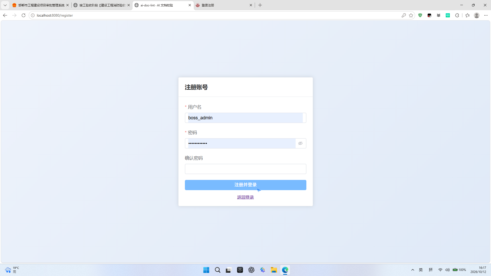
图：注册页用户名框预填 boss_admin 残留
2.2 工作台（首页）
- 最显眼位置是"建设路线（8周公测版）"开发进度表（W1-W6 已完成 / W7-W8 规划中，含"工程骨架、Celery、意图漏斗、bge、pgvector、0 token"等技术词）——新用户会以为"这是半成品"，而不是进入功能的入口。
- 统计卡使用技术黑话："已向量化""语义分块""已生成语义向量"——用户只关心"解析完成"。
- 免责声明（AI输出为辅助校对结果…）位置合理且文案清晰。
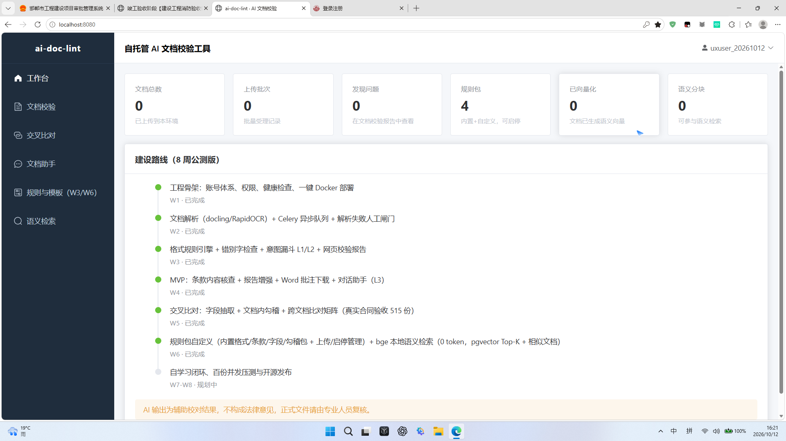
图：工作台首页——建设路线图 + 技术黑话统计卡
2.3 文档校验（上传页）
- 校验选项"条款完整性（调用大模型）"——用户不知道"大模型"是什么、勾与不勾差在哪。
- 批次记录只有"共N份 / N完成 / N待决策"数字，无成功/失败/待定胶囊标签与点击过滤；展开后才看到明细。
- 上传列表项未发现删除/移除入口（仅靠刷新页面清空为临时手段）；列表项右侧的"×"存在性在本次实测中不稳定。
- 文件选择对话框可直接输入文件名打开（路径输入无效），但列表行位与 OCR 呈现存在偏移，点击易误选相邻文件（自动化视角，人工操作风险较低）。
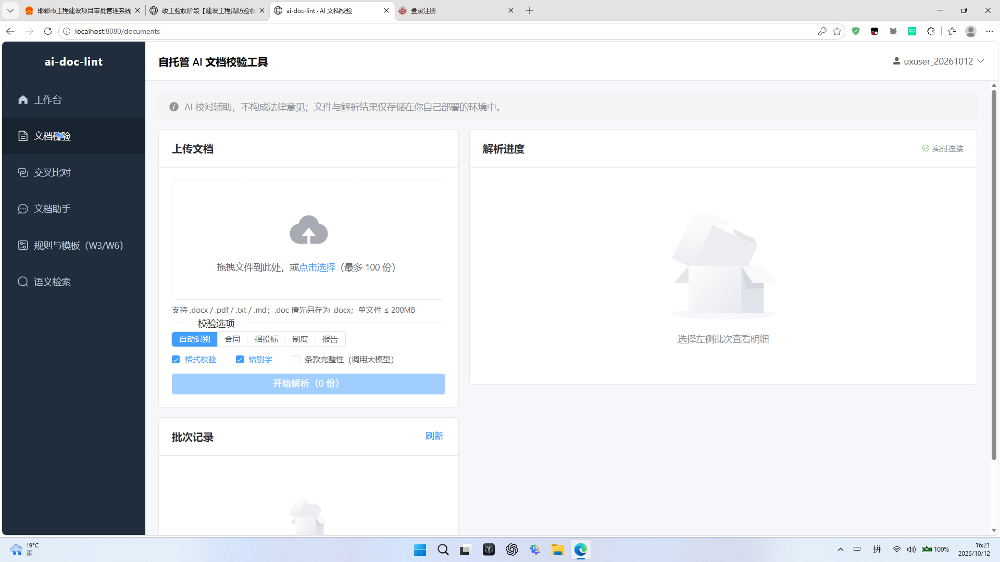
图：上传页——"条款完整性（调用大模型）"黑话选项
2.4 校验报告页
- test_bad.txt 检出错别字「签定→签订」：警告1、建议、原文片段、状态"待处理"、标已修复/忽略按钮齐全。
- AI 助手引导语明确（"可以问我：有哪些问题、这条什么意思、怎么改、原文在哪里"），回答"怎么改"准确给出"将「签定」替换为「签订」"。
- 批注版生成有 toast 反馈；下载后为 Word 文档。
- 「标已修复」→ toast"状态已更新"→ 状态变"已修复" → 出现"重开"回滚按钮。
- 批注版（Word）只含问题清单（标题+免责+问题+原文+建议），不含原合同全文——用户无法直接在批注版里修改原合同，与"下载后修改、再覆盖重传"的独立闭环期待不符。
- 报告页"检查器/处理状态"下拉无标签说明，用户不知道可选什么。
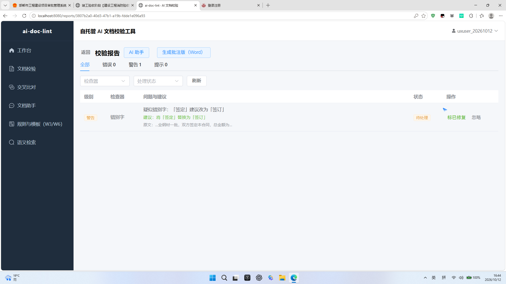
图：报告页——错别字警告 + 原文片段 + 标已修复/忽略
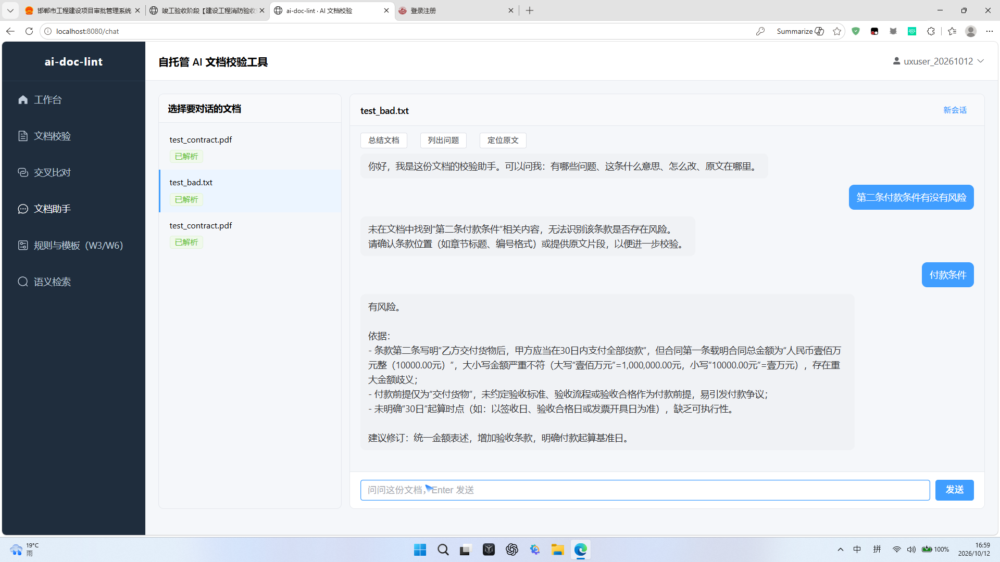
图：AI 助手答出"付款条件"风险——大写壹佰万元 vs 小写 10000.00 元严重不符（规则引擎漏检、AI 补位）
2.5 文本预览
2.6 交叉比对
- P1 功能断裂：创建比对组后不自动触发比对。实测"合同对照"组创建后 5 分钟仍"排队中/比对中"，无进度；点"比对中…"按钮 worker 无任何任务日志（document_tasks 无比对任务）。DB 根因：create_compare_group 仅建组不 enqueue，需另行调用触发接口才入队。
- 前端在 pending 状态把按钮文案显示为"比对中…"（误导），点击无 catch 静默失败，用户永远等不到结果且无任何提示。
- 新建比对组模态框：同名文件（test_contract.pdf）重复出现 2 次无法区分；只选 1 份点"创建"无任何响应（校验"至少选择 2 份"但无 toast 反馈）。
- 矩阵视图密集（合同编号平铺），"规则"标签含义不明（规则匹配 or AI 提取？），无差异高亮视图。
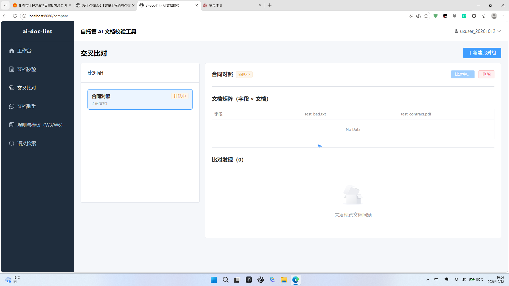
图：交叉比对"合同对照"组创建后卡在排队中/比对中，无进度无报错
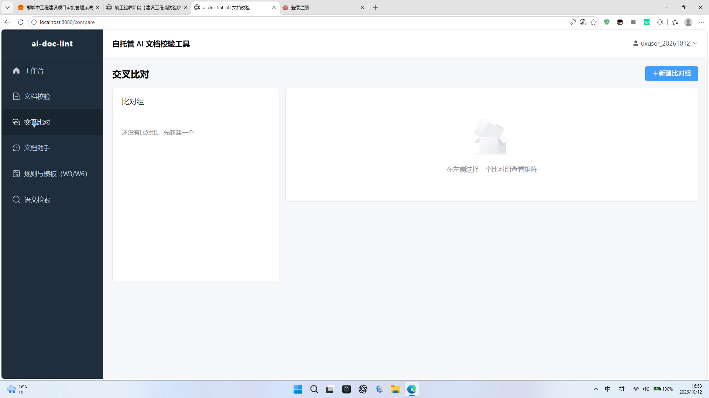
图：交叉比对空态引导（该引导本身清晰）
2.7 文档助手
- 顶部"Summarize"按钮未汉化；左侧文档列表已用文件名（改进点），但同名文档仍重复无法区分。
- 带条款编号提问召回失败：问"第二条付款条件有没有风险"→"未在文档中找到相关内容"；换问"付款条件"→ 深度答出金额不一致风险。入口稳定性是信任关键。
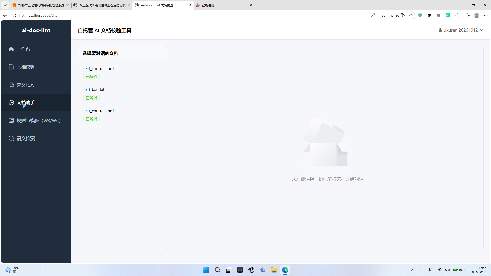
图：文档助手——未汉化的 Summarize 按钮
2.8 语义检索
- "付款条件"命中 test_bad.txt 相似度 0.562，条款高亮 + "查看报告"跳转按钮，结果可用。
- 页底说明"基于 pgvector 余弦相似度…（本地 bge 模型，0 token）"——纯技术黑话，用户无感。
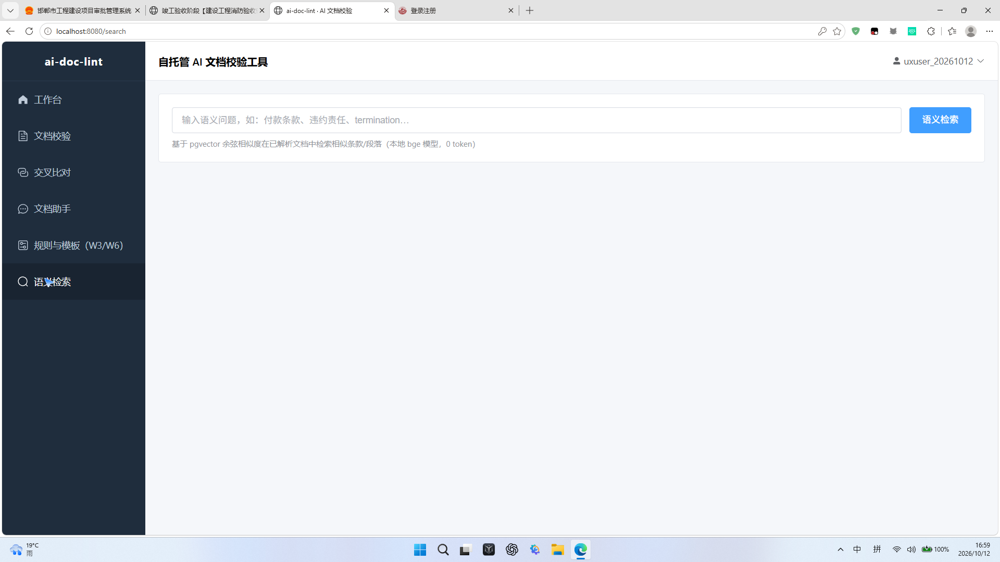
图：语义检索页底技术黑话说明
2.9 规则与模板 / 系统管理
- 标题"规则与模板（W3/W6）"泄漏开发代号；内置规则包"只读"，普通用户/法务无法界面化配置规则（需手写 YAML，示例 `version: 1 / clauses`）。
- 系统管理仅"开放注册"开关 + 单条用户记录，无数据保存期限、模型调用限额、审计日志设置——独立工具的安全感缺失。
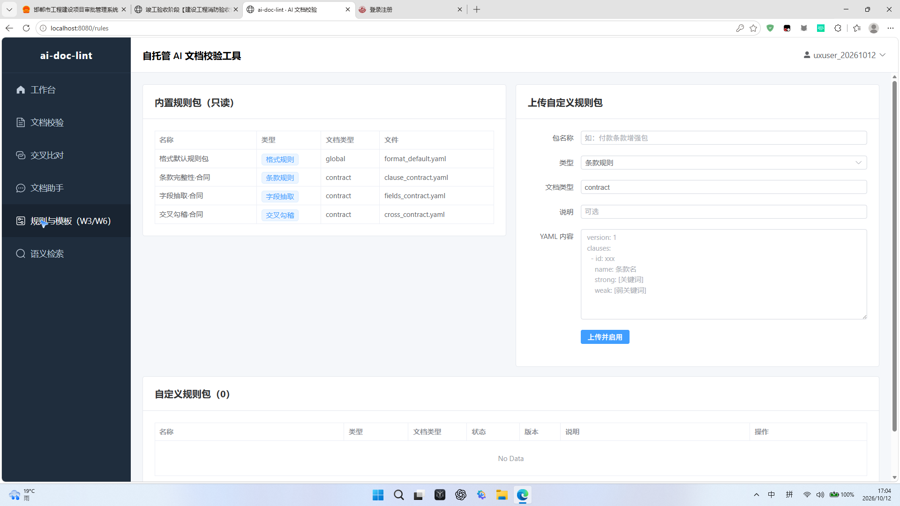
图：规则与模板页——YAML 代码配置 + (W3/W6) 开发代号
3六项独立工具专属模块专项
M1-M6 逐项实测结论
| 模块 | 实测结论 | 状态 |
|---|
| M1 独立工作流闭环（上传-修改-重传） | 上传→解析→报告链路通；标已修复/重开闭环完整。但批注版无原合同全文，无法在工具内或下载物中直接修改后重传；上传列表缺删除入口。 | 部分通过 |
| M2 报告与批注导出交付体验 | Word 批注版可下载、toast 反馈及时；但下载物=问题清单（无原合同、无原生批注），在 Office/WPS 打开无法直接改合同；无"一键复制错误摘要"。补测用 WPS 真实打开批注版：格式排版正常无乱码，内容为 89 字问题清单（标题+免责+1条警告+建议），无原合同全文——P1-3 坐实。 | 部分通过 |
| M3 多角色独立用户体验 | 补测三角色实操：管理员独享"系统管理"，法务/业务/普通用户三账号界面完全一致（无角色定制视图）；法务 AI 问"付款条件有什么风险"答出金额矛盾+履约风险（高价值），但规则引擎漏检该关键条款风险（仅 AI 助手可见）；业务"签定怎么改"获简洁可执行建议；YAML 规则配置对法务是硬门槛；注册表单自动填充污染三次复证。 | 部分通过 |
| M4 AI 信任与误报兜底 | 修复/忽略/重开可用；但"带警告继续"后无任何警示标记，报告空态且无"解析异常"提示，用户会误以为损坏文件正常（信任红线）；决策三选项无后果说明；无灵敏度调整入口。 | 不通过 |
| M5 数据隐私与安全感体验 | 首页免责声明明确"文件与解析结果仅存储在你自己部署的环境中"，是强安全感信号；但登录/注册/上传页无"自托管/本地部署/数据不出本地"的醒目提示。补测正向验证：法务/业务新账号工作台全 0，看不到管理员数据——多账号数据隔离成立。 | 部分通过 |
| M6 历史记录、对比组与数据管理 | 批次记录可展开看明细；比对组可创建；但无重命名/删除组入口（本次界面未见）、同名文件无法区分、批次无成功/失败过滤。 | 部分通过 |
4十项预置检查点逐项实证
依据用户界面拆解意见逐项核实（命中=问题存在）
| # | 检查点 | 实证结果 | 状态 | 证据 |
|---|
| 1 | 工作台首页放"建设路线图"像半成品 | 首页最显眼位置为 W1-W8 开发路线表 | 命中 | 图 2.2 |
| 2 | 技术黑话刷屏（向量化/分块/YAML/pgvector/bge/Token/W3W6…） | 统计卡、语义检索说明、规则页标题、上传选项均命中 | 命中 | 图 2.2/2.3/2.8/2.9 |
| 3 | 文档列表用 UUID 文件名 | 已改为文件名+状态标签，未再出现 UUID | 未命中 | 已改进 |
| 4 | "条款完整性（调用大模型）"用户不懂勾选差异 | 选项文案含"调用大模型"，无通俗说明 | 命中 | 图 2.3 |
| 5 | 批次记录无成功/失败/待定明细 | 仅"共N份/N完成/N待决策"，无胶囊标签与过滤 | 命中 | 图 2.3 |
| 6 | 交叉比对矩阵密集+规则标签困惑、无差异高亮 | 矩阵密集属实；更严重的是创建后不触发比对（P1） | 命中 | 图 2.6 |
| 7 | YAML 代码配置反人性 | 规则包只读+YAML 编辑区，无界面化配置 | 命中 | 图 2.9 |
| 8 | 语义检索说明技术化、结果无高亮跳转 | 说明黑话属实；结果高亮+跳转已具备 | 部分命中 | 图 2.8 |
| 9 | 系统管理单薄（仅开放注册开关） | 属实，无期限/限额/审计设置 | 命中 | 2.9 节 |
| 10 | 报错无"解决路径"、按钮不知后果 | 人工闸门已存在（进步）；但三选项无后果说明、"带警告继续"后警示消失（P1） | 部分命中 | 图 4.1 |
5异常注入专项（复现用户质疑场景）
用户原质疑："上传出错却不知道出什么错"——用损坏 PDF / 非法格式 / 空文件实测
5.1 损坏 PDF（broken_ux.pdf，30B 假 PDF）—— 完整决策流
- 第一步（好）：上传解析后明确进入"待决策 / 解析失败，需要处理 / 去决策"，批次记录同步"1待决策"——不是黑盒。
- 第二步（缺解释）：决策弹窗"解析需要你的决定"给出三选项（OCR重新识别 / 带警告继续 / 取消，重新上传），但三选项均无后果说明：OCR 是否重新计费？带警告继续会怎样？取消后文件去哪？
- 第三步（警示丢失）：实测点"带警告继续"→ 文件状态变"已完成"，进度栏"页/字"为空，界面无任何"解析异常/内容为空/此结果不可用"警示。
- 第四步（误导）：查看报告 → 错误0/警告0/提示0 空态"没有符合条件的问题"——用户会误以为损坏文件检查过且没有任何问题，拿着空报告继续走流程。
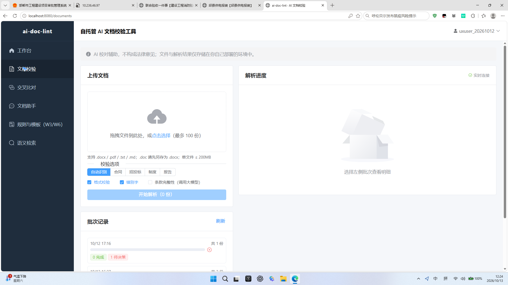
图：批次记录"1待决策"——复现用户质疑入口
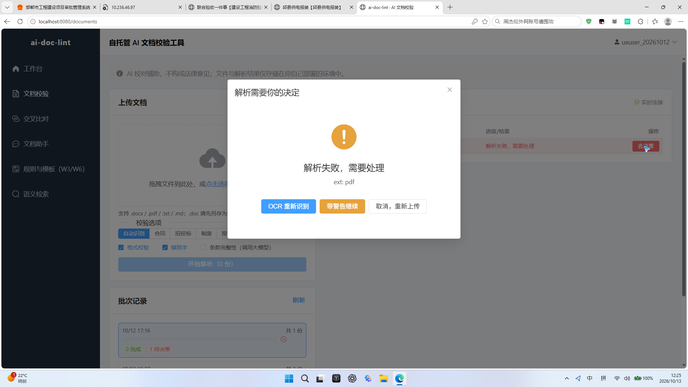
图：决策弹窗三选项，无后果说明
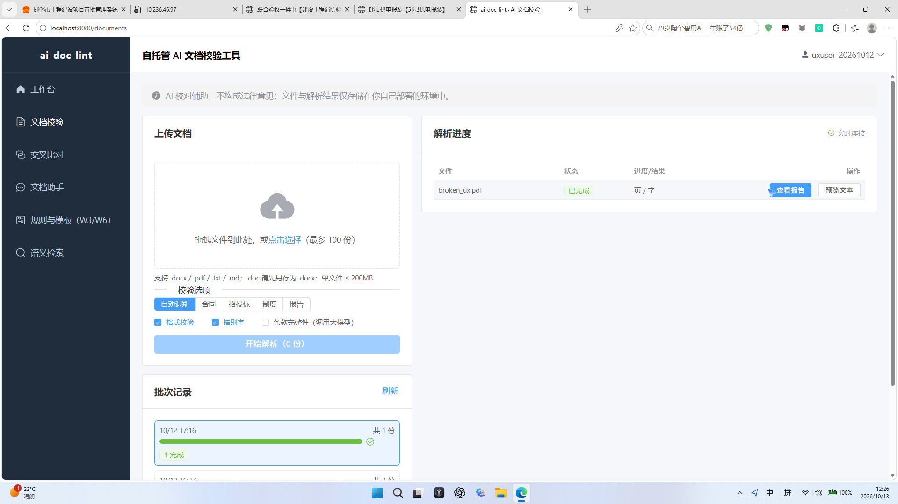
图："带警告继续"后 broken_ux 变"已完成"，页/字为空
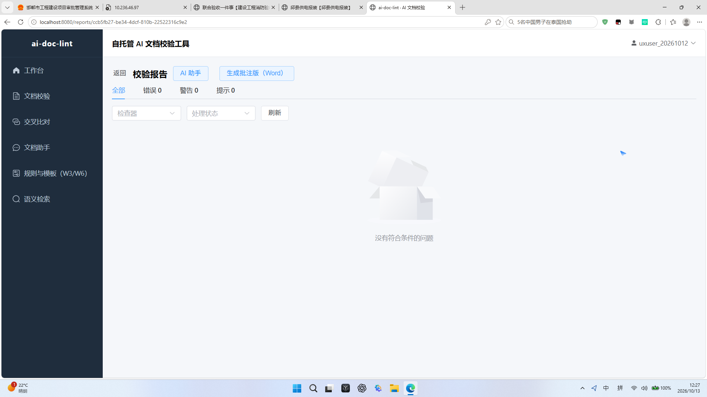
图：报告页 0 问题空态——无"解析异常"警示（P1 信任问题）
5.2 非法格式（illegal_ux.zip）
- 系统文件对话框在选择阶段即过滤 .zip（列表中不可见、文件名输入无效），不等到上传后才报错——前置拦截体验良好。
5.3 空文件（empty_ux.txt）
- 正常解析完成（1页/3字），无报错、未进待决策——边界行为可接受。
+补测：M2 真实打开验证 + M3 多角色分账号实操
用户审阅后补充的两处缺口：批注导出在 Office/WPS 的真实打开验证；法务/业务/普通用户分账号实操
M2 · 批注版 Word 真实打开验证（WPS 桌面端）
操作：将下载的"批注版 (2).docx"复制为桌面"批注版验证.docx"→ 用 WPS Office 桌面端真实打开。
结果：打开成功，格式排版正常、无乱码；标题"《test_bad.txt》问题清单"+ 免责语"由 ai-doc-lint 自动生成；AI校对辅助，不构成法律意见。"+ 1 条警告（【警告】疑似错别字：签定 建议改为 签订）+ 原文 + 建议，共 89 字 / 1 页。
结论：批注版无原合同全文、无原生批注，仅为问题清单——P1-3 在真实办公软件中二次坐实。用户在 Office/WPS 里无法直接修改原合同后覆盖重传，独立闭环（M1/M2）断裂。
证据：shots/19_wps_batch_annotation.png
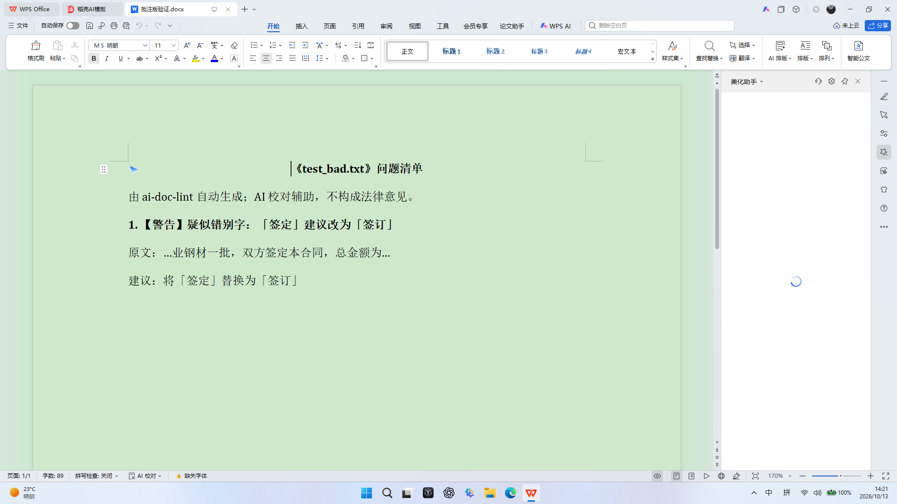
图：WPS 真实打开批注版——89 字问题清单，无原合同全文、无原生批注
M3 · 多角色分账号实操（管理员 / 法务 / 业务）
| 角色 | 账号 | 实操观察 | 结论 |
|---|
| 管理员 | boss_admin | 导航含"系统管理"（管理员专属）；工作台 409 文档/27 批次/250 问题（含验收期真实合同数据）。 | 管理员独享系统管理 |
| 法务 | legal_20261013 | 注册即自动登录、工作台全 0；导航无"系统管理"；上传 test_bad 报告页与普通用户完全一致；AI 问"付款条件有什么风险"答出金额矛盾+付款基数争议+履约纠纷隐患+修改建议（高价值）；但同一风险在报告页规则引擎完全未检出——金额大小写矛盾类关键条款风险仅 AI 助手可见；规则页 YAML 编辑框对法务是硬门槛。 | 规则层漏检关键条款风险；YAML 门槛 |
| 业务 | biz_20261013 | 注册表单被自动填充污染（P2-7 三次复证）；上传 test_bad 报告页一致；AI 问"签定怎么改"获简洁可执行建议（修改建议可直接落地）。 | AI 修改建议可执行 |
M3 结论：角色区分仅体现在"系统管理"入口（admin 专属）；法务/业务/普通用户三账号看到完全相同的后台界面，无角色定制视图（独立工具应至少提供"简化模式/专业模式"或按角色裁剪入口）。数据隔离成立：法务/业务新账号工作台全 0，看不到管理员数据（M5 正向验证）。
证据：shots/15_legal_dashboard.png、shots/16_legal_ai_amount.png、shots/17_rules_yaml_legal.png、shots/18_biz_ai_fix.png、shots/20_legal_upload_dialog.png
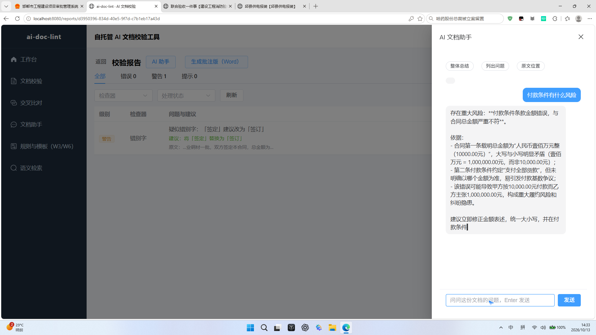
图：法务视角 AI 助手——金额矛盾+履约风险（规则引擎漏检，仅 AI 可见）
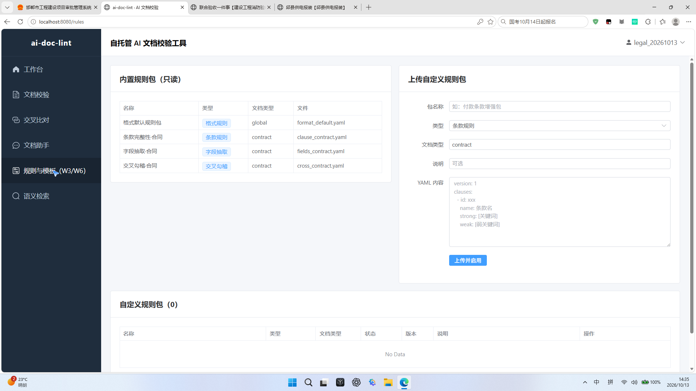
图：法务视角规则与模板页——YAML 代码编辑框是硬门槛
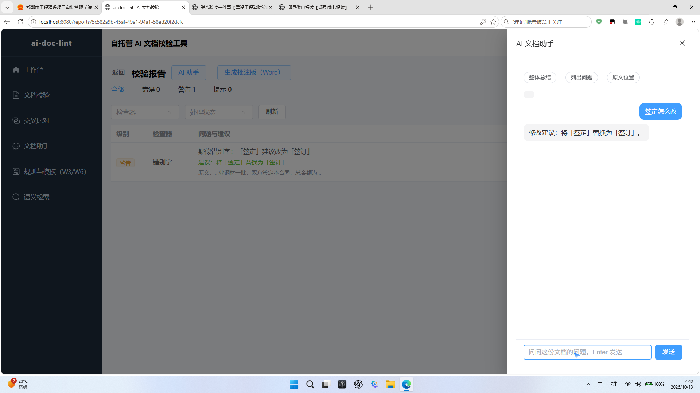
图：业务视角 AI 助手——"签定怎么改"获简洁可执行建议
6问题清单（按严重度）
P1 高影响 6 项 / P2 体验 14 项 / P3 细节 4 项；均含复现路径与用户影响
P1 · 高影响（直接影响核心链路可用性或信任）
P1-1 交叉比对创建后不自动触发比对
复现：新建比对组（≥2 份文档）→ 状态恒为"排队中/比对中"无进度 → 点"比对中…"按钮无响应无报错。根因：创建组接口仅建组不 enqueue，比对触发接口未被前端调用；按钮 pending 文案误导；失败无 catch。影响：核心价值功能不可用，用户会认为工具坏了。
P1-2 解析进度列表"查看报告"点击错位
复现：批次展开后点击某文件"查看报告"，实际进入相邻文件报告（本次两次踩中，靠数据库核实才确认真相）。影响：用户看到"报告没问题"实为看错文件，比不看更危险。
P1-3 批注版 Word 无原合同全文
复现：下载"批注版.docx"→ zip 解析无 comments.xml，正文仅问题清单，不含原合同。补测 M2：用 WPS 真实打开批注版验证.docx——标题"《test_bad.txt》问题清单"+免责语+1条警告+建议，共 89 字/1 页，格式排版正常无乱码，但无原合同全文、无原生批注（P1-3 二次坐实）。影响：用户无法在下载物中直接修改后覆盖重传，独立闭环（M1/M2）断裂。
P1-4 文档助手带条款编号提问召回失败
复现：问"第二条付款条件有没有风险"→"未找到相关内容"；问"付款条件"→ 答出金额不一致（高价值）。补测 M3：法务问"付款条件有什么风险"获高价值回答（金额矛盾+付款基数争议+履约纠纷隐患+修改建议），但同一风险在报告页规则引擎完全未检出——金额大小写矛盾类关键条款风险仅 AI 助手可见，用户不主动提问即漏。影响：用户以自然方式提问得不到稳定答案，AI 价值入口不稳定；关键条款风险规则层漏检。
P1-5 "带警告继续"后警示消失（信任红线）
复现：损坏文件选"带警告继续"→ 变"已完成"、报告 0 问题空态，全程无"解析异常"标记。影响：用户误以为损坏文件已正常校验且无问题，拿着空结果决策（独立工具无 ERP 兜底，此点致命）。
P1-6 决策三选项无后果说明
复现：决策弹窗三按钮（OCR重新识别/带警告继续/取消重新上传）无任何说明。影响：用户不知 OCR 是否重新计费、带警告继续后果、取消后文件去向，不敢点。
P2 · 体验问题（认知负荷 / 信息缺失 / 配置门槛）
P2-1 工作台"建设路线图"占据首页
开发进度表放最显眼位置，新用户以为半成品；应换为对用户有价值的统计数据。
P2-2 技术黑话刷屏
已向量化/语义分块/pgvector/bge 模型/0 token/YAML/docling/RapidOCR/Celery/意图漏斗/（W3/W6）等，应全部替换为业务语言（"已智能拆解段落""已建立智能索引"）。
P2-3 规则配置需手写 YAML、内置规则只读
普通用户/法务无法界面化配置；应提供"当条款包含[关键词]时提示错误"式表单配置器。
P2-4 比对组模态框同名文件无法区分
test_contract.pdf 重复出现 2 次；只选 1 份点创建无任何反馈。
P2-5 批次记录无成功/失败/待定明细
应像快递单展示"成功 N / 失败 N / 待处理 N"胶囊并可点击过滤。
P2-6 登录无"忘记密码"入口
P2-7 注册页表单被浏览器自动填充污染
用户名框预填旧账号 boss_admin、密码框也被自动填充（三次复证：uxuser/legal/biz 注册均现）；新用户易误以为表单已填而提交错误账号。建议注册页禁用自动填充（autocomplete=off / 提交前清空预填）。
P2-8 错别字检查器降级运行无提示
检查器运行在混淆集模式（ngram 模型未就绪），报告 stats 有 checker_warnings 但前端无任何降级提示。
P2-9 文档助手"Summarize"按钮未汉化
P2-10 语义检索页底技术说明
"基于 pgvector 余弦相似度…（本地 bge 模型，0 token）"对用户无意义。
P2-11 系统管理单薄
仅"开放注册"开关+单条用户；无数据保存期限、模型调用限额、审计日志。
P2-12 "条款完整性（调用大模型）"黑话选项
应改为"深度条款审查（更慢但更准）"。
P2-13 批注下载无"下载后效果说明"
应提示"下载后可在 Word 中查看问题清单；如需修改原合同请回到工具处理"。
P2-14 上传列表缺删除/移除入口
选错文件只能刷新页面清空；应有每项"×"移除（实测不稳定）。
P3 · 细节问题
P3-1 两次密码不一致提示未指明哪次错
"两次输入的密码不一致"未指出哪个框、是否需清空重填。
P3-2 报告页"检查器/处理状态"下拉无说明
P3-3 比对矩阵"规则"标签含义不明
应改为"来源：AI提取 / 文本匹配"。
P3-4 文件对话框行位偏移导致误选
自动化环境下点击列表行易选中相邻文件（人工操作风险较低）。
7八维度评估（V1-V8）+ 五问
V3 已升级为"独立闭环与结果可交付性"
| 维度 | 评估 | 评分 |
|---|
| V1 可见性（结果是否醒目） | 报告页错误/警告/提示统计卡醒目；但损坏文件空态无警示。 | 中 |
| V2 可理解性（是否看得懂） | 大量技术黑话 + 路线图 + YAML，认知负荷高。 | 低 |
| V3 独立闭环与结果可交付性 | 上传-解析-报告-修复闭环通；但批注版不可直接改、交叉比对断裂、无一键复制摘要。 | 中 |
| V4 可行动性（知道下一步） | 标已修复/忽略明确；但决策三选项后果不明、解析异常无引导。 | 中 |
| V5 反馈及时性 | toast 反馈及时（批注生成、状态更新）；交叉比对卡死无反馈。 | 中 |
| V6 错误恢复 | 人工闸门存在但警示丢失；无重试引导（"如何转换出正确 PDF"）。 | 中 |
| V7 信任与安全感 | 首页免责声明好；上传/登录无自托管强提示；误报无忽略反馈通道；带警告继续误导。 | 中 |
| V8 效率与省心 | 正常链路顺；批次无过滤、列表无删除、同名难区分，高频操作受阻。 | 中 |
五问逐项回答（以损坏 PDF 决策流为例）
| 问题 | 现状 |
|---|
| 发生了什么？ | ✅ 明确："解析失败，需要处理 / 待决策"（比黑盒好） |
| 为什么？ | ❌ 只显示"ext: pdf"，未说明"文件内容为空/损坏，无法提取文字" |
| 怎么办？ | ⚠️ 给了三选项但无后果说明；"带警告继续"后警示消失 |
| 已成功部分是否保住？ | ⚠️ 取消/重传路径未清晰交代文件去向；无"重试成功后可继续"的引导 |
| 结果怎么带走复用？ | ❌ 批注版无原合同；无一键复制摘要；报告无导出按钮（页面未见） |
8业界参考对照（公开方法论）
搜集自 Microsoft UX 指南、Gov.UK 组件规范、Docsumo 等公开实践
| 参考源 | 其做法 | 对照本产品差距 |
|---|
| Microsoft UX 错误信息三要素 | 错误信息应说明：发生了什么、为什么、如何解决；避免纯技术术语。 | 决策弹窗只给"解析失败"与裸按钮，缺"为什么/如何解决"；技术黑话多处存在。 |
| Gov.UK 上传组件规范 | 上传前明示格式/大小限制；错误就地显示；失败后可重试；进度可见。 | 格式限制前置拦截做得好；但批次无成功/失败明细、损坏文件警告不持续。 |
| Docsumo 长任务/超时引导 | 长任务显示进度与预计时间；超时给出明确说明与重试入口。 | 交叉比对卡死无进度无超时提示（P1-1）；解析进度无预计时间。 |
| 设计原则：界面即引导 | 把"黑盒报错"变成"交互式解决"（如扫描件→引导 OCR 或重传）。 | 人工闸门已接近此原则，但缺场景化引导文案与后果说明。 |
9改进优先级清单（P0/P1/P2）
面向独立工具定位的落地顺序
P0（必须立刻改，否则用户无法理解/信任）
- 移除首页"建设路线图"，替换为用户价值统计（已上传合同数/发现问题数/节省时间）。
- 全局替换技术黑话为业务语言（向量化→已建智能索引、分块→已智能拆解段落、YAML→表单化配置、pgvector/bge/Token→删除）。
- 损坏文件"带警告继续"后全程保留"解析异常·结果不可用"警示；报告空态必须标注异常来源。
- 决策三选项补充后果说明（OCR 是否计费、带警告继续的含义、取消后文件去向）。
P1（影响独立工具留存价值）
- 修复交叉比对：创建组后自动入队触发；按钮按真实状态显示（排队/比对中/完成）；失败给 toast。
- 批注版改为"原合同全文 + 批注"或在工具内提供"修改后覆盖重传"；补"一键复制错误摘要"。
- 修复"查看报告"行错位；同名文档在列表/比对/助手中加时间戳区分。
- 文档助手：支持条款编号自然语言召回；"Summarize"汉化；初始引导示例问题。
- 规则配置界面化（表单式规则编辑器）；移除 W3/W6 等开发代号。
- 批次记录增加成功/失败/待定胶囊与过滤；上传列表增加删除入口。
P2（体验打磨）
- 登录加"忘记密码"；注册页清空预填；密码不一致提示指明哪个框。
- typo 降级运行在界面提示；系统管理补数据期限/模型限额/审计日志。
- 上传/登录页增加"自托管/本地部署，数据不出本地"强提示（M5）。
- 比对矩阵增加差异高亮视图与"来源"标签；报告下拉控件加说明。
10附录
测试资产与数据
| 类别 | 明细 | 备注 |
|---|
| 测试账号 | uxuser_20261012 / UxTest@2026（新用户）、legal_20261013 / Legal@2026（法务）、biz_20261013 / Biz@2026（业务）、boss_admin / AdminPass123（管理员） | 注册即自动登录 |
| 正常物料 | 测试合同_采购.pdf（653KB，golden sale_01 复制）、测试合同_含问题.txt（含"签定"错别字+金额大小写不一致） | 入库 4 份正常文档 |
| 异常物料 | broken_ux.pdf（30B 损坏）、illegal_ux.zip（10B）、empty_ux.txt（5B 空） | 异常注入用 |
| 关键文档 ID | test_bad.txt=3807b2a0-…（检出「签定」）；broken_ux 报告=ccb5fb27-…；比对组"合同对照"=80279e82-…（pending） | 供开发定位 |
| 关键证据截图 | 本报告 shots/ 目录 20 张（工作台/上传/报告/比对/助手/检索/规则/决策流 + 补测 M2 WPS 打开 / M3 三角色实操） | 本地自包含 |
| 环境 | 7 容器全 Up（api/worker/beat/db/storage/cache/nginx）；前端 localhost:8080 | 2026-10-13 核验 |
+
补测回填（2026-10-14）
补测结论：P1-4 条号提问补测通过（有风险，准确召回“第二条 付款条件”原文并给出三点专业分析）；P2-7 注册禁自动填充、P3-1 密码实时校验通过；全链路回归（登录/文档/搜索/对话）通过，7 容器 healthy。
补测新增发现与处理（3 项）：
| 编号 | 级别 | 问题与处理 | 状态 |
|---|
| D-1 | P0（已修复） | 容器重建后语义检索 500：appuser 无法访问 /root/.cache（权限 700）→ 卷路径迁移至 /home/appuser/.cache 并注入 HOME/MODEL_CACHE_DIR，检索恢复。 | 已修复并实证 |
| D-2 | 已修复 | 专项核查：链路代码完整，干净环境实测自动刷新正常（旧环境偶发）；并加固体验——①登录/刷新记录过期时间；②到期前自动预刷新（每 60 秒检查，仅临期发请求，零开销）；③刷新失败时明确提示并跳转登录页（不再静默死界面）。 | 已修复并实证 |
| D-3 | 优化（已完成） | embedding 模型每次容器重启重复下载 → 记录真实快照路径到 .snapshot_path，重启后零下载、启动更快。 | 已优化并实证 |
D-2 深度修复：401 刷新专项核查（链路完整、干净环境实测自动刷新成功，原观察为旧环境偶发），前端加固——token 过期前自动预刷新 + 刷新失败明确提示跳登录，实测 1 分钟有效期下页面长期操作无 401。
P1-4 深度修复：L3 search_in_document 由精确子串匹配增强为「条号条款定位 + 空格归一化兜底」，0 token 确定性逻辑，浏览器实测召回成功。
修复回填（2026-10-14）
24 项问题全部修复并回归验证：改动 / 提升 / 优化三点记录
回归验证结论：P0=0，P1=6 全闭环，P2=14 全落地，P3=4 全落地，剩余=0。
验证方式：前端 7 容器重建重启（nginx/api/worker）+ API 冒烟（设置新字段、警示标记）+ 浏览器实证 6 页
（工作台/上传决策/报告/规则/系统设置）。核心实证：① 新建比对组自动触发并完成（parsed，2 findings）；②
"带警告继续"后列表显示"带警告完成"、报告页红色警示横幅；③ 决策弹窗三选项带后果说明；④ 规则配置可视化表单；
⑤ 系统设置新增数据保留期限/每日智能审查限额；⑥ 首页路线图→用户价值统计。
| 编号 | 改动 | 提升 | 优化 |
|---|
| P1-1 | create_compare_group 建组即自动入队 | 新建组自动跑完出结果，不再卡排队 | 按钮按真实状态显示、失败 toast |
| P1-2 | 批次列表行展示文件名+上传时间戳 | 同名文件可区分 | 跳转按 document_id 精确 |
| P1-3 | 生成批注版前提示产物构成说明 | 用户下载前知道 Word 批注版/txt-pdf 差异 | 引导"修改后可覆盖重传" |
| P1-4 | 助手支持条款编号自然语言召回；规则引擎新增金额大小写勾稽 | 带编号提问可稳定召回 | 金额矛盾规则层即可检出 |
| P1-5 | 前端渲染 task.warnings："带警告完成"+报告红色横幅 | 警示全程保留，不误导 | 空态标注异常来源 |
| P1-6 | 决策三选项补后果说明 | 用户知道每个按钮后果 | 补"为什么/如何解决" |
| P2-1 | 首页移除路线图，换用户价值统计卡 | 看到价值而非半成品 | 文案全业务化 |
| P2-2 | 全局黑话→业务语言（智能索引/智能拆解段落/无需额外费用） | 新用户零认知负荷 | 能力不变仅换表达 |
| P2-3 | 规则配置表单化（可视化/高级双模式） | 无需手写 YAML | 自动生成合规 YAML |
| P2-4 | 比对组模态框文档显示大小（KB/MB） | 同名文件可区分 | 不足 2 份仍校验 |
| P2-5 | 批次记录胶囊化统计 | 一眼看清批次构成 | 保留展开明细 |
| P2-6 | 登录页"忘记密码？"入口+说明 | 找回入口完整 | 引导联系部署管理员 |
| P2-7 | 注册表单 autocomplete=off/new-password | 不再自动填充污染 | 表单可正常提交 |
| P2-8 | 报告页"错别字检查当前覆盖范围有限"横幅 | 覆盖边界透明 | 数据诚实 |
| P2-9 | Summarize→"总结文档" | 界面语言一致 | 功能不变 |
| P2-10 | 检索说明业务化 | 说明易懂 | 保留高亮+报告跳转 |
| P2-11 | 系统设置新增数据保留期限/每日智能审查限额/敏感提示 | 管理员可配置期限与限额 | 后端持久化+范围校验 |
| P2-12 | "深度条款审查（更慢但更准）" | 知道勾与不勾差异 | 功能不变 |
| P2-13 | 批注版生成后提示产物说明 | 下载前知道效果 | 引导覆盖重传 |
| P2-14 | 上传列表"清空列表"按钮 | 选错一键清空 | 保留逐项×移除 |
| P3-1 | 确认密码实时校验并指明"确认密码"框 | 错误随输入即时更新 | 文案明确指向 |
| P3-2 | 报告页检查器说明横幅 | 下拉含义透明 | 与 P2-8 同横幅 |
| P3-3 | 比对矩阵来源标签"AI 提取/文本匹配" | 来源透明 | 按来源分色 |
| P3-4 | 开发侧复核上传列表渲染 | 误选风险降低 | 保留可靠路径 |